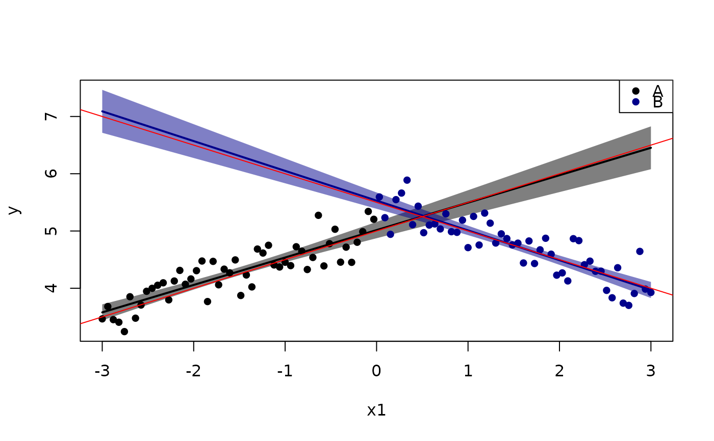
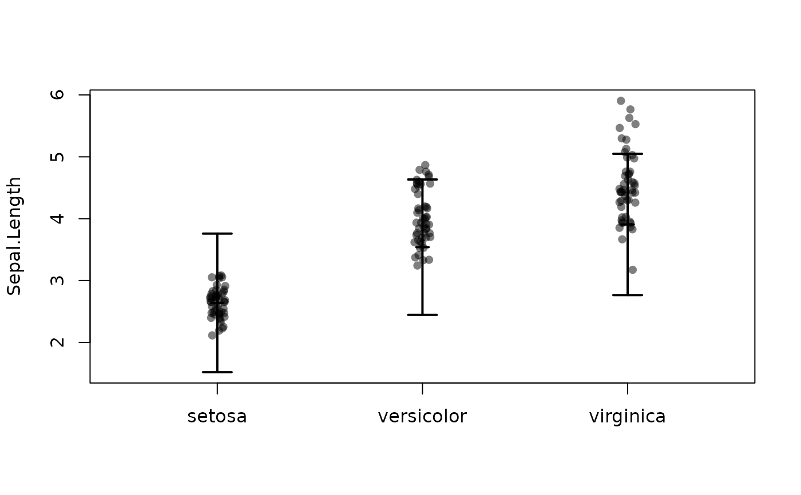
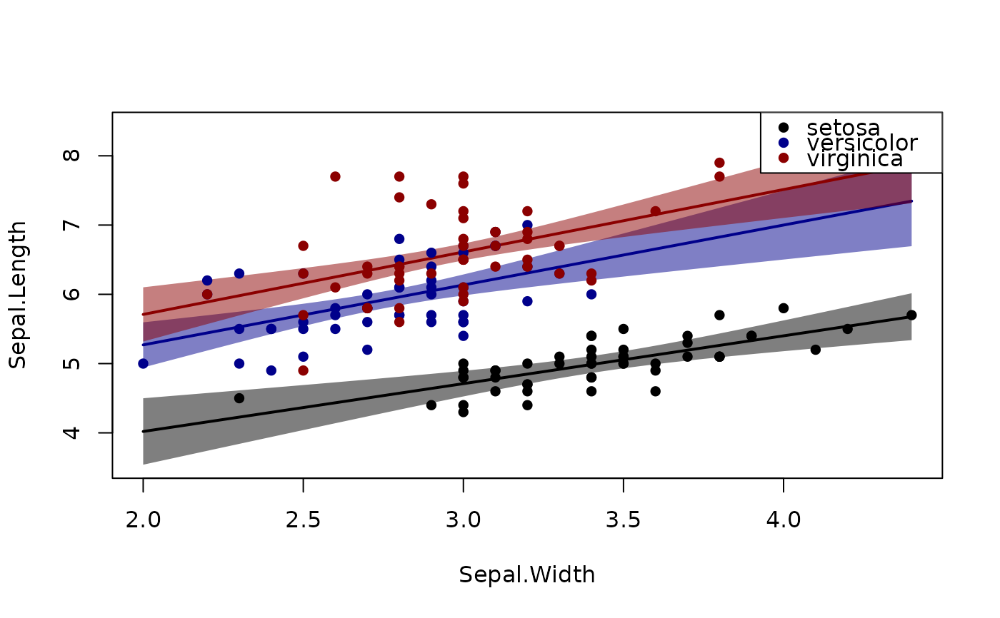

Plot regression line (with interactions) and partial residuals.
plotConf( model, var1 = NULL, var2 = NULL, data = NULL, ci.lty = 0, ci = TRUE, level = 0.95, pch = 16, lty = 1, lwd = 2, npoints = 100, xlim, col = NULL, colpt, alpha = 0.5, cex = 1, delta = 0.07, centermark = 0.03, jitter = 0.2, cidiff = FALSE, mean = TRUE, legend = ifelse(is.null(var1), FALSE, "topright"), trans = function(x) { x }, partres = inherits(model, "lm"), partse = FALSE, labels, vcov, predictfun, plot = TRUE, new = TRUE, ... )
| model | Model object (e.g. |
|---|---|
| var1 | predictor (Continuous or factor) |
| var2 | Factor that interacts with |
| data | data.frame to use for prediction (model.frame is used as default) |
| ci.lty | Line type for confidence limits |
| ci | Boolean indicating wether to draw pointwise 95% confidence limits |
| level | Level of confidence limits (default 95%) |
| pch | Point type for partial residuals |
| lty | Line type for estimated regression lines |
| lwd | Line width for regression lines |
| npoints | Number of points used to plot curves |
| xlim | Range of x axis |
| col | Color (for each level in |
| colpt | Color of partial residual points |
| alpha | Alpha level |
| cex | Point size |
| delta | For categorical |
| centermark | For categorical |
| jitter | For categorical |
| cidiff | For categorical |
| mean | For categorical |
| legend | Boolean (add legend) |
| trans | Transform estimates (e.g. exponential) |
| partres | Boolean indicating whether to plot partial residuals |
| partse | . |
| labels | Optional labels of |
| vcov | Optional variance estimates |
| predictfun | Optional predict-function used to calculate confidence limits and predictions |
| plot | If FALSE return only predictions and confidence bands |
| new | If FALSE add to current plot |
| ... | additional arguments to lower level functions |
list with following members:
Variable on the x-axis (var1)
Variable on the y-axis (partial residuals)
Matrix with confidence limits and predicted values
termplot
Klaus K. Holst
n <- 100 x0 <- rnorm(n) x1 <- seq(-3,3, length.out=n) x2 <- factor(rep(c(1,2),each=n/2), labels=c("A","B")) y <- 5 + 2*x0 + 0.5*x1 + -1*(x2=="B")*x1 + 0.5*(x2=="B") + rnorm(n, sd=0.25) dd <- data.frame(y=y, x1=x1, x2=x2) lm0 <- lm(y ~ x0 + x1*x2, dd) plotConf(lm0, var1="x1", var2="x2")### points(5+0.5*x1 -1*(x2=="B")*x1 + 0.5*(x2=="B") ~ x1, cex=2) data(iris) l <- lm(Sepal.Length ~ Sepal.Width*Species,iris) plotConf(l,var2="Species")plotConf(l,var1="Sepal.Width",var2="Species")